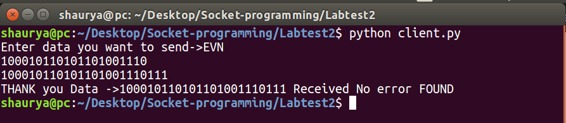
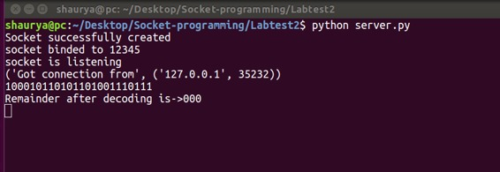

Prerequisites: Know about Cyclic redundancy, Socket Programming
What is CRC?
CRC or Cyclic Redundancy Check is a method of detecting accidental changes/errors in the communication channel.
CRC uses Generator Polynomial which is available on both sender and receiver sides. An example generator polynomial is of the form like x^3 + 1. This generator polynomial represents key 1001. Another example is x^2 + x. that represents key 110.
Example:
Let data send is “EVN”
We convert a string to binary string data.
input_string = "EVN"
# CONVERT string data to binary string data
data = (''.join(format(ord(x), 'b') for x in input_string))
print (data)
OUTPUT: 100010110101101001110
CRC KEY: 1001
Code: CRC key length -1 -> 000 appended at end of data.
New data: 100010110101101001110000 Key:1001
Now we apply CRC in socket programming python at both sender and receiver side.
Sender Side
1. The task is to send a string data to server/receiver side.
2. The sender sends a string let us say “EVN”.
3. First, this string is converted to binary string “100010110101101001110” key is known to both the side sender and receiver here key used is 1001.
4. This data is encoded using the CRC code using the key in client/sender side.
5. This encoded data is sent to the receiver.
6. Receiver later decodes the encoded data string to verify whether there was any error or not.
# Import socket module
import socket
def xor(a, b):
# initialize result
result = []
# Traverse all bits, if bits are
# same, then XOR is 0, else 1
for i in range(1, len(b)):
if a[i] == b[i]:
result.append('0')
else:
result.append('1')
return ''.join(result)
# Performs Modulo-2 division
def mod2div(divident, divisor):
# Number of bits to be XORed at a time.
pick = len(divisor)
# Slicing the divident to appropriate
# length for particular step
tmp = divident[0 : pick]
while pick < len(divident):
if tmp[0] == '1':
# replace the divident by the result
# of XOR and pull 1 bit down
tmp = xor(divisor, tmp) + divident[pick]
else: # If leftmost bit is '0'
# If the leftmost bit of the dividend (or the
# part used in each step) is 0, the step cannot
# use the regular divisor; we need to use an
# all-0s divisor.
tmp = xor('0'*pick, tmp) + divident[pick]
# increment pick to move further
pick += 1
# For the last n bits, we have to carry it out
# normally as increased value of pick will cause
# Index Out of Bounds.
if tmp[0] == '1':
tmp = xor(divisor, tmp)
else:
tmp = xor('0'*pick, tmp)
checkword = tmp
return checkword
# Function used at the sender side to encode
# data by appending remainder of modular divison
# at the end of data.
def encodeData(data, key):
l_key = len(key)
# Appends n-1 zeroes at end of data
appended_data = data + '0'*(l_key-1)
remainder = mod2div(appended_data, key)
# Append remainder in the original data
codeword = data + remainder
return codeword
# Create a socket object
s = socket.socket()
# Define the port on which you want to connect
port = 12345
# connect to the server on local computer
s.connect(('127.0.0.1', port))
# Send data to server 'Hello world'
## s.sendall('Hello World')
input_string = raw_input("Enter data you want to send->")
#s.sendall(input_string)
data =(''.join(format(ord(x), 'b') for x in input_string))
print data
key = "1001"
ans = encodeData(data,key)
print(ans)
s.sendall(ans)
# receive data from the server
print s.recv(1024)
# close the connection
s.close()

Receiver Side
1. The receiver receives the encoded data string from the sender.
2. Receiver with the help of the key decodes the data and find out the remainder.
3. If the remainder is zero then it means there no error in data sent by the sender to receiver.
4. If the remainder comes out to be non-zero it means there was an error, a Negative Acknowledgement is sent to the sender. The sender then resends the data until the receiver receives correct data.
# First of all import the socket library
import socket
def xor(a, b):
# initialize result
result = []
# Traverse all bits, if bits are
# same, then XOR is 0, else 1
for i in range(1, len(b)):
if a[i] == b[i]:
result.append('0')
else:
result.append('1')
return ''.join(result)
# Performs Modulo-2 division
def mod2div(divident, divisor):
# Number of bits to be XORed at a time.
pick = len(divisor)
# Slicing the divident to appropriate
# length for particular step
tmp = divident[0 : pick]
while pick < len(divident):
if tmp[0] == '1':
# replace the divident by the result
# of XOR and pull 1 bit down
tmp = xor(divisor, tmp) + divident[pick]
else: # If leftmost bit is '0'
# If the leftmost bit of the dividend (or the
# part used in each step) is 0, the step cannot
# use the regular divisor; we need to use an
# all-0s divisor.
tmp = xor('0'*pick, tmp) + divident[pick]
# increment pick to move further
pick += 1
# For the last n bits, we have to carry it out
# normally as increased value of pick will cause
# Index Out of Bounds.
if tmp[0] == '1':
tmp = xor(divisor, tmp)
else:
tmp = xor('0'*pick, tmp)
checkword = tmp
return checkword
# Function used at the receiver side to decode
# data received by sender
def decodeData(data, key):
l_key = len(key)
# Appends n-1 zeroes at end of data
appended_data = data + '0'*(l_key-1)
remainder = mod2div(appended_data, key)
return remainder
# Creating Socket
s = socket.socket()
print ("Socket successfully created")
# reserve a port on your computer in our
# case it is 12345 but it can be anything
port = 12345
s.bind(('', port))
print ("socket binded to %s" % (port))
# put the socket into listening mode
s.listen(5)
print ("socket is listening")
while True:
# Establish connection with client.
c, addr = s.accept()
print('Got connection from', addr)
# Get data from client
data = c.recv(1024)
print(data)
if not data:
break
key = "1001"
ans = decodeData(data, key)
print("Remainder after decoding is->"+ans)
# If remainder is all zeros then no error occured
temp = "0" * (len(key) - 1)
if ans == temp:
c.sendall("THANK you Data ->"+data + " Received No error FOUND")
else:
c.sendall("Error in data")
c.close()

NOTE:
How to run the program:
1. You should have socket programming library.
2. First, run server program then run client program.
3. Indentation error may occur while you copy paste the code so be careful while copying.